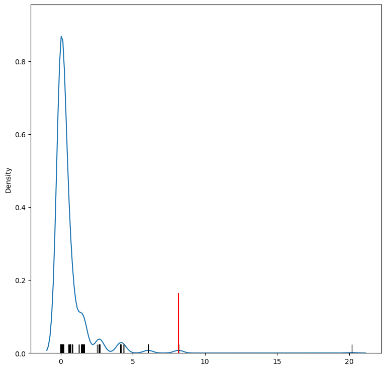
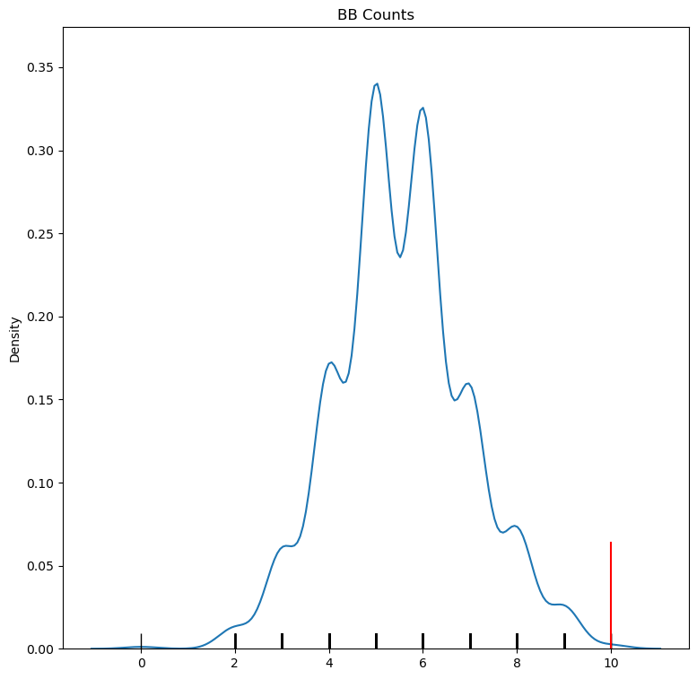
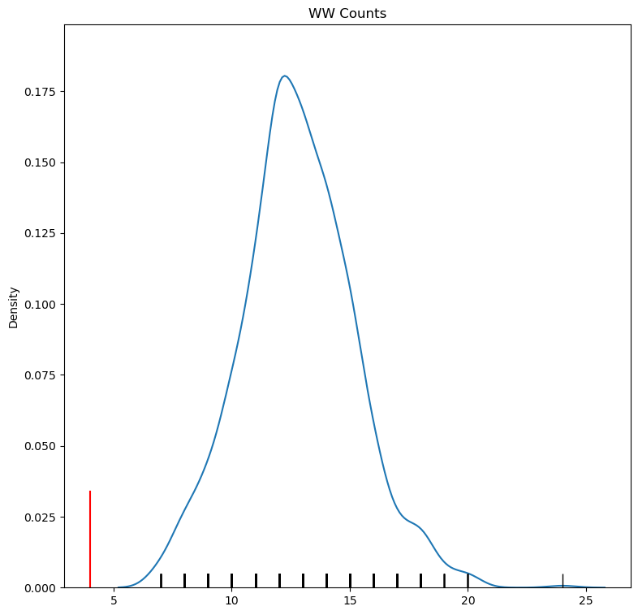

This page was generated from /home/runner/work/esda/esda/docs/notebooks/joincounts.ipynb.
Interactive online version:

[1]:
import libpysal as lps
import matplotlib.pyplot as plt
import numpy as np
import esda
from esda.join_counts import Join_Counts
[2]:
w = lps.weights.lat2W(4, 4)
y = np.ones(16)
y[0:8] = 0
np.random.seed(12345)
[3]:
jc = Join_Counts(y, w)
jc.bb
[3]:
np.float64(10.0)
[4]:
jc.crosstab
[4]:
| Neighbor | W | B |
|---|---|---|
| Focal | ||
| W | 10.0 | 2.0 |
| B | 2.0 | 10.0 |
[5]:
jc.expected
[5]:
| Neighbor | W | B |
|---|---|---|
| Focal | ||
| W | 6.0 | 6.0 |
| B | 6.0 | 6.0 |
[6]:
jc.chi2
[6]:
np.float64(8.166666666666666)
[7]:
jc.chi2_p
[7]:
np.float64(0.004266724822176131)
[8]:
jc.p_sim_chi2
[8]:
np.float64(0.008)
[9]:
import seaborn as sns
[10]:
f, ax = plt.subplots(1, figsize=(9, 9))
sns.kdeplot(jc.sim_chi2, ax=ax)
sns.rugplot(jc.sim_chi2, color="k", ax=ax)
plt.axvline(jc.chi2, 0, 0.17, color="r")
[10]:
<matplotlib.lines.Line2D at 0x153354a50>

[11]:
f, ax = plt.subplots(1, figsize=(9, 9))
sns.kdeplot(jc.sim_bb, ax=ax)
sns.rugplot(jc.sim_bb, color="k", ax=ax)
plt.axvline(jc.bb, 0, 0.17, color="r")
plt.title("BB Counts")
[11]:
Text(0.5, 1.0, 'BB Counts')

[12]:
f, ax = plt.subplots(1, figsize=(9, 9))
sns.kdeplot(jc.sim_bw, ax=ax)
sns.rugplot(jc.sim_bw, color="k", ax=ax)
plt.axvline(jc.bw, 0, 0.17, color="r")
plt.title("WW Counts")
[12]:
Text(0.5, 1.0, 'WW Counts')
